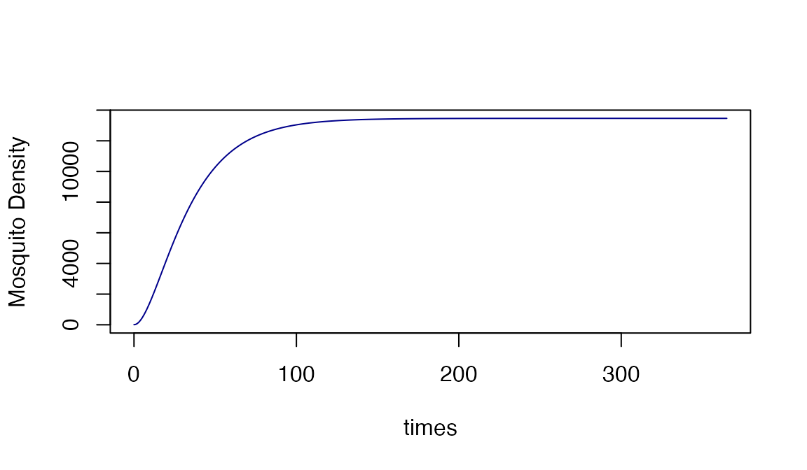

ramp.xds was designed to reduce the
costs of model building and computation for malaria and other
mosquito-transmitted pathogens. One of the core challenges for the
software was to provide users with a set of utilities that would make it
easy to do work with models after they’ve been built.
The function xds_setup was discussed in Getting
Started.
mod <- xds_setup(Xname = "SIS", MYZname = "si", Lname = "basicL")
mod$MYZname## [1] "si"The functions xde_solve and dts_solve can
be called to solve dynamical systems. In these systems, time is
the independent variable. Given a set of initial values,
xde_solve or dts_solve compute the values of
the dependent variables at those time points. Other functions return
stable orbits for models with a canonical seasonal signal.
mod <- xde_solve(mod)The variables and terms are returned as raw and parsed outputs:
raw outputs are returned in tabular form
outputs are parsed into named lists; the values of the dependent variables can be retrieved by name.
dynamical terms are computed and returned.
names(mod$outputs)## [1] "time" "last_y" "orbits" "terms" "deout"a family of functions makes it easy to plot basic outputs of the models.
xds_plot_M(mod)
A set of utilities was developed to work with initial values, making
it easy to change the intitial values through a function call. In
solving, xde_solve calls get_inits with a
flatten=TRUE
get_inits(mod, flatten=TRUE)## [1] 1 5 1 999 1With the default, flatten=FALSE, get_inits
returns a named list that is easy to read:
get_inits(mod)## $L
## $L$L
## [1] 1
##
##
## $MYZ
## $MYZ$M
## [1] 5
##
## $MYZ$Z
## [1] 1
##
##
## $X
## $X$S
## [1] 999
##
## $X$I
## [1] 1Since it is a named list, it’s easy to examine a specific element in that list:
get_inits(mod)$MYZ## $M
## [1] 5
##
## $Z
## [1] 1Another set of utilities was developed to change parameter values through a function call.
The software includes functions that perform various analytical tasks:
Compute the steady states of model components using a method that does not involve simulation. These functions also provide a way of independently verifying the code.
Compute stable orbits.
Compute vectorial capacity and its spatial-temporal dispersion, the human transmitting capacity and its spatial-temporal dispersion, and malaria reproductive numbers as pseudo-threshold conditions.
ramp.xds has built-in utilities to make
it easy to work with the models, including functions to visualize the
outputs, to examine and change initial values and parameters, and to
analyze the models.
The xds model object – any object that
can be solved by xde_solve or dts_solve – is a
compound list in R. If you’re already familiar with the format of the
xds model object, it’s possible examine
any part of it, or change any of the parameter values or initial
conditions. While that might be the way to go in the long run, the
xds model object includes a set of
utilities to retrieve initial values, parameters, and some other values
of interests.
The code and documentation for these utilities is designed to be
instructive, and a goal for ramp.xds has
been to provide detailed documentation, include references to peer
reviewed journal articles.
Some of the values affect the rigid interfaces for egg laying and
emergence and for blood feeding and transmission, so changing the values
without updating the interface would create a model that was internally
inconsistent. To handle this, ramp.xds has
introduced functions to make it easy to change values after setup.
From the user perspective, using these
change_ functions will make it easy to
avoid various errors. There are three kinds of functions:
Changing a quantity that affects some part of an interface:
Human population density
The mosquito dispersal matrix
The time spent matrix
Changing initial values, except human / host population density:
Changing parameter values.
Modification of any features of a model, but some of these features are:
change_H
change_calK
change_*par
change_*inits
To build a model with the features you want. The goal of software design was to make it possible to do almost anything, but there were some important constraints.
Some changes affect the model’s structure. These are considered advanced options for model building, and they are dealt with in separate vignettes. Structural changes include:
changing the number of population strata
changing the number of patches
adding or removing aquatic habitats
adding vertebrate host species
adding vector species